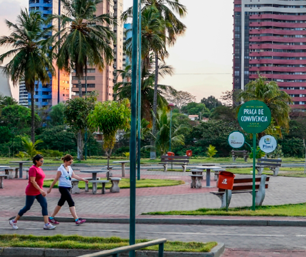
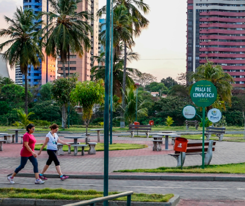

Ano que Teresina foi fundada:
A cidade de Teresina foi oficialmente fundada em 1852, a partir da construção de um novo povoamento nas margens dos rios Parnaíba e Poti. O nome do município é uma homenagem à Teresa Cristina Maria de Bourbon, esposa do imperador Dom Pedro II.
Quando começou a ser povoada:
Teresina começou a ser povoada no século XVII, com Domingos Jorge Velho e um grupo de bandeirantes, que estabeleceram uma feitoria e um criatório de gado. Em 1797 foi erguida a igreja de Nossa Senhora do Amparo.
Nome do Bairro mais antigo:
A capital do estado do Piauí surgiu a partir de uma pequena comunidade situada às margens do Rio Poti, e que posteriormente, o primeiro bairro da capital piauiense levaria o nome desse rio: bairro Poti Velho.
Alguns pontos Turristico:

 

Lendas Urbanas mais faladas:
Cabeça de Cuia:Crispim se revolta e inicia uma discussão com a própria mãe, arremessa um osso de boi contra ela, atingindo-a na cabeça e matando-a. Antes de morrer, no entanto, a mãe teria o amaldiçoado a ficar vagando pelos rios Parnaíba e Poti. O jovem logo vira uma figura monstruosa, com uma enorme cabeça, no formato de uma cuia.
Num-se-pode:Conta a história de uma linda mulher que, tarde da noite, aparecia na Praça Saraiva ostentando sua beleza debaixo de um dos lampiões ali existentes.Movidos por aquela bela aparição, os homens se aproximavam para conversar, ou quem sabe, aventurar mais uma conquista. Ao chegarem perto, a linda mulher pedia-os cigarro, e quando recebia começava a crescer, crescer, até atingir o topo do lampião de gás e nele acender o cigarro. Enquanto crescia, ela repetia: "num-se-pode, num-se-pode, num-se-pode,..."